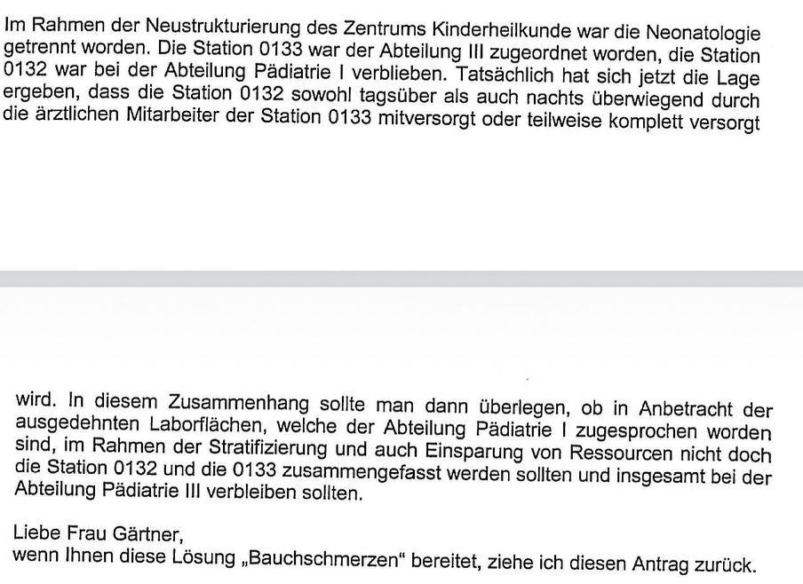
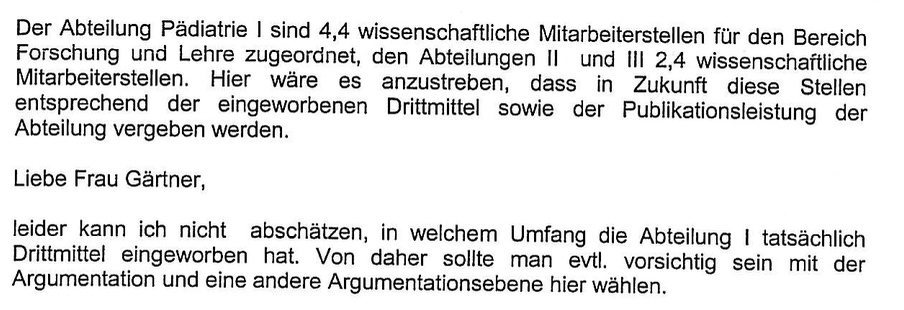

Ausgangspunkt der ganzen Affäre waren die Berufungszusagen. Meine galten aufgrund des Konkurrenzangebotes aus London für fünf Jahre, die von Frau Gärtner und Herrn Paul nur für zwei oder drei. Außerdem verfügte meine Abteilung weiterhin über den größten Teil der Stationen und war auch beim Personal und bei den Laborflächen besser ausgestattet.
Das hatten sich die beiden gemerkt. Nun begannen sie zu graben. Sie wollten an Teile meines kleinen Imperiums heran und sprachen sich offenbar darüber ab, wie sie dabei vorgehen wollten.
Herr Paul verfasste einen Brief an den Vorstand über die „Zuständigkeiten und Verantwortlichkeiten im Zentrum Kinderheilkunde“. Darin ging es um Stationen, Arztstellen, Schreibkräfte, Laborflächen, Forschungspersonal und ganze medizinische Bereiche. Von diesem Brief wusste ich zunächst nichts. Eines Tages sprach mich der Ärztliche Direktor Günther Bergmann darauf an.
„Was meinen Sie denn zu dem Brief?“
„Zu welchem Brief?“
Er meinte den Brief, den Frau Gärtner und Herr Paul wegen der Verteilung der Ressourcen an den Vorstand geschrieben hätten. Ich sagte ihm, dass ich einen solchen Brief nicht kenne.
„Dann lassen Sie ihn sich doch von den beiden geben.“
Also ging ich zunächst zu Frau Gärtner. Sie wand sich mit Unbehagen und erklärte mir, Herr Paul habe den Brief geschrieben. Dann solle er ihn mir auch zuleiten. Ich bat Herrn Paul darum. Er leistete zunächst Widerstand, wies seine Sekretärin aber doch schließlich an, mir den Brief zu schicken. Dabei geschah ein Fehler, der für die weitere Entwicklung entscheidend wurde: Statt der endgültigen Fassung erhielt ich zunächst den Entwurf.
Dieser Entwurf war aufschlussreich. Er enthielt nicht nur die vorgesehenen Forderungen, sondern auch persönliche Bemerkungen von Herrn Paul an Frau Gärtner. An einer Stelle wies er sie darauf hin, dass er die (umfangreiche) Drittmitteleinwerbung meiner Abteilung nicht beurteilen könne und man deshalb mit dieser Argumentation vorsichtig sein solle. An einer anderen schrieb er sinngemäß, dass er einen bestimmten Antrag zurückziehen werde, falls ihr diese Lösung „Bauchschmerzen“ bereite. Damit war deutlich, dass der Brief zwischen den beiden abgestimmt worden war.


Ich rief Herrn Paul an und sagte ihm, dass ich nicht die Endfassung bekommen hätte. Daraufhin wurde er ziemlich aufgeregt und verlangte, ich solle ihm das Original des Entwurfs sofort zurückgeben. „Nein“, sagte ich, „der Entwurf bleibt jetzt erst einmal bei mir. Und dann hätte ich gern noch die endgültige Fassung.“ Schließlich bekam ich auch diese. Nun besaß ich beide Versionen.
Die endgültige Fassung war noch umfangreicher als der Entwurf und von Frau Gärtner und Herrn Paul unterzeichnet. Darin wurde verlangt, Arztstellen, Schreibkräfte, Laborflächen, Forschungspersonal, das mir zugeordnete Akutlabor sowie medizinische Zuständigkeiten neu zu verteilen. Alles sollte aus meiner Abteilung herausgelöst und den beiden anderen Abteilungen zugeordnet werden.
Dann lud Bergmann wieder einmal zu einem Gespräch ein. Solche Gespräche legte er gern auf acht Uhr abends. Zu dieser Zeit war ich nach einem langen Arbeitstag müde und nicht mehr besonders aufnahmefähig. Trotzdem ließ ich mich darauf ein. Wir trafen uns in seinem Büro im Flachbau vor der Klinik. Diesen Bau nannten wir den „Führerbunker“. Es ging darum, ob wir nach allem, was inzwischen geschehen war, nicht wieder vernünftig miteinander umgehen und Vertrauen zueinander aufbauen könnten.
Ich hatte den Entwurf und die endgültige Fassung in meiner Tasche. „Vertrauen aufzubauen ist schwierig“, sagte ich, „wenn man weiß, wie dieser Brief entstanden ist.“ Dann holte ich beide Schriftstücke heraus und reichte den Entwurf zunächst Frau Gärtner. Sie erklärte, sie kenne ihn nicht. Nach meiner Erinnerung lief sie dabei regelrecht grün an. Für mich bestand kein Zweifel, dass sie ihn gesehen hatte.
Danach bekam Herr Paul die Papiere. Auch er behauptete, den Entwurf nicht zu kennen – jenen Entwurf, den seine eigene Sekretärin mir geschickt hatte und dessen Rückgabe er anschließend so aufgeregt verlangt hatte.
Damit war für mich eine Grenze überschritten. Über Stellen, Räume und Zuständigkeiten kann man streiten. Solche Auseinandersetzungen gehören zu einer Universitätsklinik. Wenn aber zwei Kollegen angesichts eines eindeutigen Schriftstücks das Offensichtliche bestreiten, ist eine vertrauensvolle Zusammenarbeit kaum noch möglich.
Das Gespräch ging trotzdem weiter. Nun wurde erneut darüber gestritten, welche Stellen den Abteilungen Pädiatrie II und III zugeordnet werden sollten. Offenbar spielten meine schriftlich fixierten Berufungszusagen keine Rolle mehr. Paul und Gärtner hatten ihre Kenntnis des Briefentwurfs geleugnet, und Bergmann wich meinem Einwand aus, dass dieses Vorgehen einen Vertragsbruch bedeutete. Als es längst Nacht geworden war, hatte ich genug von diesem intriganten Spiel und erklärte das Gespräch für beendet. Ich stand auf und wollte gehen. Da erhob sich Bergmann, ein etwas stämmiger Mann, stellte sich vor die Tür und versuchte, mir den Ausgang zu versperren. Das war eine völlig absurde Situation. Ich drängte ihn zur Seite und verließ das Büro.
Damit war für mich das Ende der Fahnenstange erreicht. Nun wusste ich, dass meine Zukunft nicht mehr in Göttingen lag, denn mit solchen Menschen wollte ich keinen weiteren Umgang.
In der folgenden Zeit eskalierte der Konflikt weiter. Ich war am Boden zerstört und begann, mich intensiv auf andere Stellen zu bewerben. Zeitweise dachte ich sogar darüber nach, mich irgendwo als Kinderarzt niederzulassen. Hauptsache weg. Schließlich kam das Angebot aus Berlin. Ich nahm es an. Die weitere Entwicklung in Berlin ist an entsprechender Stelle festgehalten.
Der Brief und sein Entwurfspielten eine zentrale Rolle in meinem weiteren Lebensweg. Er zeigte mir, dass die Zusammenarbeit in Göttingen keine Zukunft mehr hatte, und zwang mich zu einem Neuanfang, den ich mir damals nicht gewünscht hatte. Im Rückblick bin ich Frau Gärtner und Herrn Paul dafür beinahe dankbar. Ohne ihren Brief wäre ich vielleicht in Göttingen geblieben und hätte nicht die wunderbaren Zeiten und Ereignisse in Berlin erlebt.
Manchmal öffnen einem ausgerechnet diejenigen eine neue Tür, die einem zuvor andere Türen zuschlagen wollten.